7.1 Demo
library(tidyverse)
theme_set(theme_classic())7.1.1 Korrelationen und Regressionen
7.1.1.1 Beispiel 1: Pearson’s product moment correlation
Aus Logan (2010 S. 184): Script an Tools/Packages des Moduls Research Methods angepasst
Sokal and Rohlf (1997) present an unpublished data set (L. Miller) in which the correlation between gill weight and body weight of the crab (Pachygrapsus crassipes) is investigated.
7.1.1.1.1 Step 1
Import the crabs data set crabs.csv
crabs <- read_csv("14_Statistik2/data/crabs.csv")7.1.1.1.2 Step 2
Assess linearity and bivariate normality using a scatterplot with marginal boxplots
library(ggExtra) # damit wir boxplots um den Scatterplot zeichnen können
p <- ggplot(crabs, aes(BODYWT, GILLWT)) +
geom_point() +
geom_smooth(method = "loess")
ggMarginal(p, type = "boxplot",size = 15)Figure 7.1: Conclusions - data not obviously nonlinear and no evidence of nonnormality (boxplots not asymmetrical) (Logan 2010)
7.1.1.1.3 Step 3
Calculate the Pearson’s correlation coefficient and test \(H_0 : \rho = 0\) (that the population correlation coefficient equals zero).
cor.test(~GILLWT + BODYWT, crabs)
##
## Pearson's product-moment correlation
##
## data: GILLWT and BODYWT
## t = 5.4544, df = 10, p-value = 0.0002791
## alternative hypothesis: true correlation is not equal to 0
## 95 percent confidence interval:
## 0.5783780 0.9615951
## sample estimates:
## cor
## 0.8651189Conclusions - reject \(H_0\) that population correlation coefficient equals zero, there was a strong positive correlation between crab weight and gill weight (\(r = 0.865\), \(t_{10} = 5.45\), \(P< 0.001\)).
7.1.1.2 Beispiel 2: Spearman rank correlation
Weihnachtsinsel-Krabben aus Logan (2010 S. 186) (Script an Tools/Packages des Moduls Research Methods angepasst)
Green (1997) investigated the correlation between total biomass of red land crabs (Gecarcoidea natalis) and the density of their burrows at a number of forested sites (Lower site: LS and Drumsite: DS) on Christmas Island.
7.1.1.2.1 Step 1
Import the Green (1997) data set green.csv
green <- read_csv("14_Statistik2/data/green.csv")7.1.1.2.2 Step 2
Assess linearity and bivariate normality for the two sites separately using a scatterplots with marginal boxplots
p1 <- green %>%
filter(SITE == "LS") %>%
ggplot(aes(TOTMASS,BURROWS)) +
geom_point() +
geom_smooth(se = F)
p2 <- green %>%
filter(SITE == "DS") %>%
ggplot(aes(TOTMASS,BURROWS)) +
geom_point() +
geom_smooth(se = F)
ggMarginal(p1, type = "boxplot",size = 15)Figure 7.2: some evidence of non-normality (boxplots not asymmetrical)
ggMarginal(p2, type = "boxplot",size = 15)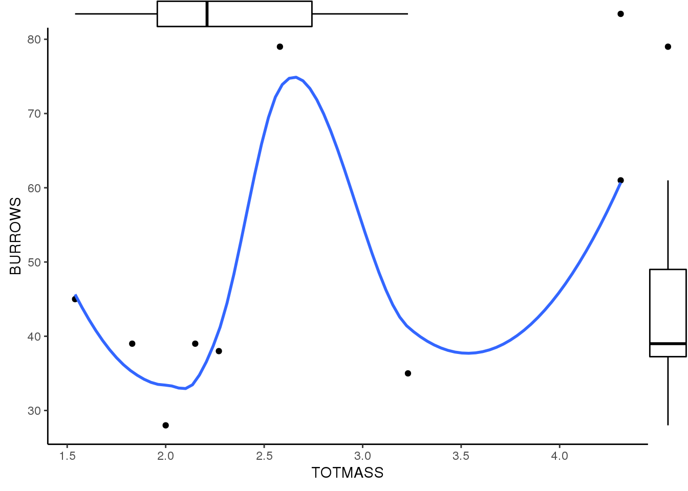
7.1.1.2.3 Step 3
Calculate the Spearman’s rank correlation coefficient and test \(H_0: \rho = 0\) (that the population correlation coefficient equals zero)
cor.test(~BURROWS + TOTMASS, data = green, subset = SITE == "LS", method="spearman")
##
## Spearman's rank correlation rho
##
## data: BURROWS and TOTMASS
## S = 24.574, p-value = 0.001791
## alternative hypothesis: true rho is not equal to 0
## sample estimates:
## rho
## 0.8510678Conclusions - reject \(H_0\) that population correlation coefficient equals zero, there was a strong positive correlation between crab biomass and burrow density at Low site (\(\rho = 0.851\), \(S_{10} = 24.57\), \(P = 0.0018\)).
cor.test(~BURROWS + TOTMASS, data = green, subset = SITE == "DS",method="spearman")
##
## Spearman's rank correlation rho
##
## data: BURROWS and TOTMASS
## S = 69.916, p-value = 0.6915
## alternative hypothesis: true rho is not equal to 0
## sample estimates:
## rho
## 0.1676677Conclusions - do not reject \(H_0\) that population correlation coefficient equals zero, there was no detectable correlation between crab weight and gill weight at Drumsite (\(\rho = 0.168\), \(S_{10} = 69.92\), \(P = 0.692\)).
7.1.1.2.4 Step 4
Summarize findings with scatterplots, including a 95% confidence ellipses for the population bivariate mean center.
ggplot(green, aes(BURROWS, TOTMASS)) +
geom_point() +
stat_ellipse(geom = "path", level = 0.95) +
facet_wrap(~SITE)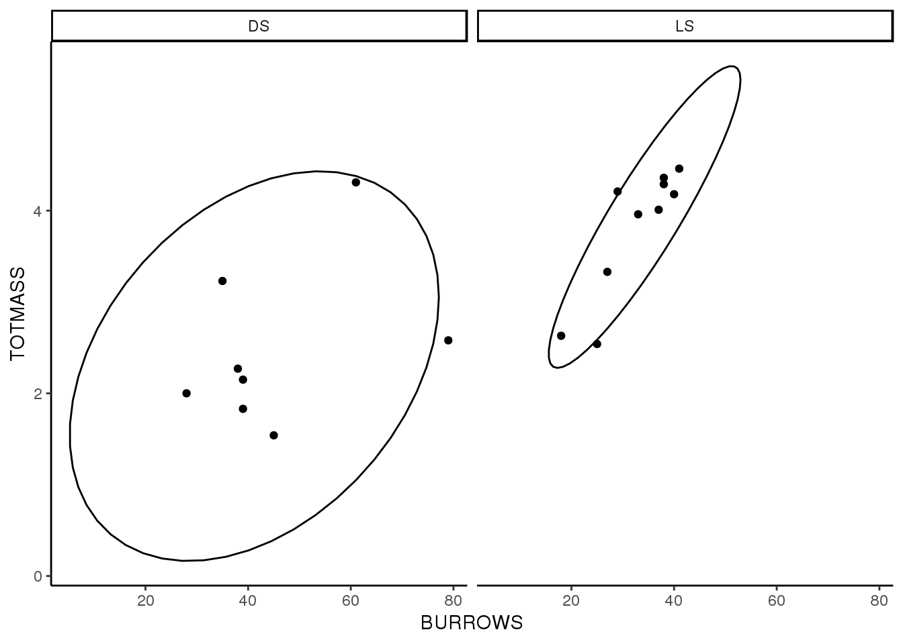
library(tidyverse)
library(ggfortify) # um autoplot() für lm/aov nutzen zu können7.1.1.3 Beispiel 3: Simple linear regression - fixed X
Amerikanischer Reismehlkäfer Tribolium confusum aus Logan (2010 S. 188) (Script an Tools/Packages des Moduls Research Methods angepasst)
As part of a Ph.D into the effects of starvation and humidity on water loss in the confused flour beetle (Tribolium confusum), Nelson (1964) investigated the linear relationship between humidity and water loss by measuring the amount of water loss (mg) by nine batches of beetles kept at different relative humidities (ranging from 0 to 93%) for a period of six days (Table 14.1 Sokal and Rohlf (1997)).
7.1.1.3.1 Step 1
Import the Nelson (1964) data set nelson.csv
nelson <- read_csv("14_Statistik2/data/nelson.csv")7.1.1.3.2 Step 2
Assess linearity, normality and homogeneity of variance using a scatterplot with marginal boxplots and a lowess smoother.
p <- ggplot(nelson, aes(HUMIDITY,WEIGHTLOSS)) +
geom_point() +
geom_smooth(se = F)
ggMarginal(p, type = "boxplot",size = 15)Figure 7.3: Conclusions - no evidence of nonnormality (boxplots not overly asymmetrical), non homogeneity of variance (points do not become progressively more or less spread out along the regression line) or non-linearity (Logan 2010)
7.1.1.3.3 Step 3
The ordinary least squares method is considered appropriate as the there is effectively no uncertainty (error) in the predictor variable (relative humidity).
7.1.1.3.4 Step 4
Fit the simple linear regression model (\(y_i = \beta_0 + \beta_1\chi_i\)) and examine the diagnostics.
nelson.lm <- lm(WEIGHTLOSS ~HUMIDITY, nelson)
autoplot(nelson.lm, label.size = 3)![Conclusions - There is no obvious 'wedge pattern' evident in the residual plot (confirming that the assumption of homogeneity of variance is likely to be met). Although there is some deviation in the QQ normal plot (suggesting that the response variable does deviate from normal), the sample size is rather small and the test is reasonably robust to such deviations. Finally, none of the points approach the high Cook’s D contours suggesting that none of the observations are overly influential on the final fitted model.](_main_files/figure-html/unnamed-chunk-57-58-1.png)
Figure 7.4: Conclusions - There is no obvious ‘wedge pattern’ evident in the residual plot (confirming that the assumption of homogeneity of variance is likely to be met). Although there is some deviation in the QQ normal plot (suggesting that the response variable does deviate from normal), the sample size is rather small and the test is reasonably robust to such deviations. Finally, none of the points approach the high Cook’s D contours suggesting that none of the observations are overly influential on the final fitted model.
influence.measures(nelson.lm)
## Influence measures of
## lm(formula = WEIGHTLOSS ~ HUMIDITY, data = nelson) :
##
## dfb.1_ dfb.HUMI dffit cov.r cook.d hat inf
## 1 1.07457 -0.92033 1.07457 1.449 5.31e-01 0.417 *
## 2 0.17562 -0.13885 0.17705 1.865 1.81e-02 0.289 *
## 3 -0.83600 0.52023 -0.91800 0.552 2.86e-01 0.164
## 4 -0.32184 0.10806 -0.45713 0.970 9.67e-02 0.118
## 5 0.00868 0.00169 0.01969 1.531 2.26e-04 0.112
## 6 0.11994 0.27382 0.73924 0.598 1.97e-01 0.129
## 7 0.00141 -0.00609 -0.00956 1.674 5.33e-05 0.187
## 8 -0.01276 0.03163 0.04208 1.825 1.03e-03 0.255
## 9 0.03662 -0.07495 -0.09204 2.019 4.93e-03 0.330 *Conclusions: None of the leverage (hat) values are greater than \(2*\frac{p}{n} = 0.444\) and therefore (none are considered to be outliers in x-space). Furthermore, none of the Cook’s D values are \(\ge\) 1 (no point is overly influential). Hence there is no evidence that hypothesis tests will be unreliable.
7.1.1.3.5 Step 5
Examine the parameter estimates and hypothesis tests
summary(nelson.lm)
##
## Call:
## lm(formula = WEIGHTLOSS ~ HUMIDITY, data = nelson)
##
## Residuals:
## Min 1Q Median 3Q Max
## -0.46397 -0.03437 0.01675 0.07464 0.45236
##
## Coefficients:
## Estimate Std. Error t value Pr(>|t|)
## (Intercept) 8.704027 0.191565 45.44 6.54e-10 ***
## HUMIDITY -0.053222 0.003256 -16.35 7.82e-07 ***
## ---
## Signif. codes: 0 '***' 0.001 '**' 0.01 '*' 0.05 '.' 0.1 ' ' 1
##
## Residual standard error: 0.2967 on 7 degrees of freedom
## Multiple R-squared: 0.9745, Adjusted R-squared: 0.9708
## F-statistic: 267.2 on 1 and 7 DF, p-value: 7.816e-07Conclusions - Reject H0 that the population slope equals zero. An increase in relative humidity was found to be associated with a strong (\(r^2 = 0.975\)), significant decrease in weight loss (\(b = -0.053\), \(t7 = -16.35\), \(P < 0.001\)) in confused flour beetles.
7.1.1.3.6 Step 6
Calculate the 95% confidence limits for the regression coefficients
confint(nelson.lm)
## 2.5 % 97.5 %
## (Intercept) 8.25104923 9.15700538
## HUMIDITY -0.06092143 -0.045522877.1.1.3.7 Step 7
Use the fitted linear model to predict the mean weight loss of flour beetles expected at 50 and 100% relative humidity
predict(nelson.lm, data.frame(HUMIDITY = c(50, 100)), interval="prediction",se=T)
## $fit
## fit lwr upr
## 1 6.042920 5.303471 6.782368
## 2 3.381812 2.549540 4.214084
##
## $se.fit
## 1 2
## 0.09889579 0.18940006
##
## $df
## [1] 7
##
## $residual.scale
## [1] 0.29666317.1.1.3.8 Step 8
Summarize the findings of the linear regression analysis with a scatterplot including the regression line, regression equation and \(r^2\).
ggplot(nelson, aes(HUMIDITY, WEIGHTLOSS))+
geom_point() +
labs(x = "% Relative humidity", y = "Weight loss (mg)") +
# geom_abline(intercept = nelson.lm$coefficients[1], slope = nelson.lm$coefficients[2], colour = "red") +
geom_smooth(method = "lm", se = 0.95, lty = 2) +
annotate("text", x= 99, y= 8.6, label = "WEIGHTLOSS == -0.053*HUMIDITY + 8.704", parse = T, hjust = 1) +
annotate("text", x= 99, y= 9, label = "r^{2}==0.975", parse = T,hjust = 1) 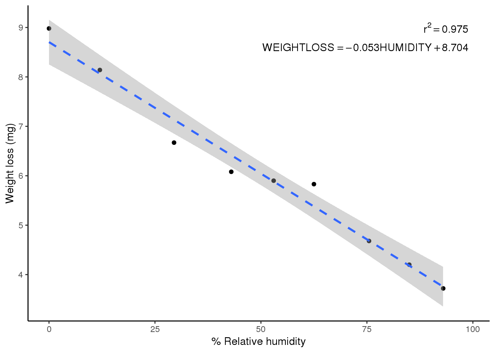
library(tidyverse)
library(ggfortify) # um autoplot() für lm/aov nutzen zu können7.1.1.4 Beispiel 4: Simple linear regression - random X
Aus Logan (2010 S. 192): Script an Tools/Packages des Moduls Research Methods angepasst
To investigated the nature of abundance-area relationships for invertebrates in intertidal mussel clumps, Peake and Quinn (1993) measured area (mm2) (dependent variable: AREA) and number of non-mussel individuals supported (response variable: INDIV) from a total of 25 intertidal mussel clumps(from Box 5.4 of Quinn and Keough (2002)).
7.1.1.4.1 Step 1
Import the Peake and Quinn (1993) data set peake.csv
peake <- read.csv("14_Statistik2/data/peake.csv")7.1.1.4.2 Step 2
Assess linearity, normality and homogeneity of variance using a scatterplot with marginal boxplots and a lowess smoother
p <- ggplot(peake, aes(AREA, INDIV)) +
geom_point()+
geom_smooth()
ggMarginal(p, type = "boxplot", size = 10)Figure 7.5: Conclusions - scatterplot of rawdata (left figure) indicates evidence of non-normality (boxplots not symmetrical) and evidence that homogeneity of variance my also be violated (points become more spread along the line of the regression line). Data transformed to logarithms (base 10) appear to meet the assumptions of normality and homogeneity of variance better (right figure). Linearity of the log-log relationship also appears reasonable (Logan 2010)
p <- p +
scale_x_log10() +
scale_y_log10()
ggMarginal(p, type = "boxplot", size = 10)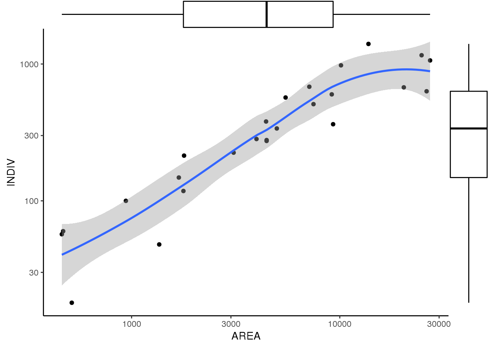
7.1.1.4.3 Step 3
The ordinary least squares method is considered appropriate as the main focus will be on hypothesis testing and generating a predictive model.
7.1.1.4.4 Step 4
Fit the simple linear regression model (\(\gamma_i = \beta_0 + \beta_1\chi_i\)) and examine the diagnostics.
peake.lm <- lm(INDIV ~ AREA, data = peake)
autoplot(peake.lm, label.size = 3) Figure 7.6: Conclusions - There is a definite ‘wedge pattern’ evident in the residual plot which is indicative of a problem with homogeneity of variance. The Q-Q normal plot confirms that the response variable does deviate from normal. One of the points (observation 25, obscured by the legend) is close to the higher Cook’s D contours suggesting that this observation may be overly influential on the final fitted model (Logan 2010).
peake.lm <- lm(log10(INDIV) ~ log10(AREA), data = peake)
autoplot(peake.lm, label.size = 3)![Conclusions - The residual plot resulting from a model based on log transformed data does not depict an obvious 'wedge', the Q-Q normal plot indicates a greater degree of normality and non of the points are close to the higher Cook’s D contours. This confirms that it is more appropriate to fit the linear model using the log transformed data [@logan2010].](_main_files/figure-html/unnamed-chunk-81-82-1.png)
Figure 7.7: Conclusions - The residual plot resulting from a model based on log transformed data does not depict an obvious ‘wedge’, the Q-Q normal plot indicates a greater degree of normality and non of the points are close to the higher Cook’s D contours. This confirms that it is more appropriate to fit the linear model using the log transformed data (Logan 2010).
peake.lm <- lm(log10(INDIV) ~ log10(AREA), data = peake)
autoplot(peake.lm, label.size = 3)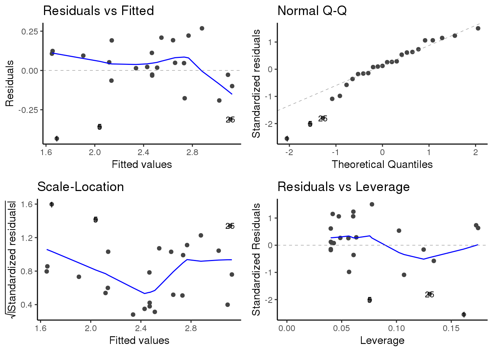 Conclusions - The residual plot resulting from a model based on log transformed data does not depict an obvious “wedge”, the Q-Q normal plot indicates a greater degree of normality and non of the points are close to the higher Cook’s D contours. This confirms that it is more appropriate to fit the linear model using the log transformed data (Logan 2010).
influence.measures(peake.lm)
## Influence measures of
## lm(formula = log10(INDIV) ~ log10(AREA), data = peake) :
##
## dfb.1_ dfb.l10. dffit cov.r cook.d hat inf
## 1 -1.202012 1.12137 -1.2929 0.670 0.626553 0.1615 *
## 2 0.310855 -0.29097 0.3319 1.260 0.056245 0.1727
## 3 0.269684 -0.25255 0.2877 1.278 0.042502 0.1745 *
## 4 0.153477 -0.13896 0.1781 1.187 0.016366 0.1023
## 5 -0.484207 0.42414 -0.6182 0.804 0.164749 0.0756
## 6 -0.062392 0.05251 -0.0897 1.151 0.004183 0.0608
## 7 0.052830 -0.04487 0.0739 1.158 0.002846 0.0633
## 8 0.187514 -0.15760 0.2707 1.052 0.036423 0.0605
## 9 0.006384 -0.00416 0.0164 1.141 0.000140 0.0428
## 10 0.004787 -0.00131 0.0244 1.137 0.000311 0.0401
## 11 0.013583 0.00419 0.1238 1.101 0.007882 0.0400
## 12 -0.003011 -0.00112 -0.0287 1.137 0.000432 0.0401
## 13 0.000247 0.00259 0.0198 1.138 0.000204 0.0407
## 14 -0.003734 -0.00138 -0.0356 1.135 0.000662 0.0401
## 15 -0.015811 0.05024 0.2419 1.013 0.028826 0.0418
## 16 -0.017200 0.02518 0.0595 1.142 0.001842 0.0487
## 17 -0.061445 0.09368 0.2375 1.038 0.028033 0.0474
## 18 -0.025317 0.03314 0.0619 1.151 0.001995 0.0561
## 19 -0.146377 0.18521 0.3173 1.015 0.049144 0.0607
## 20 0.100361 -0.13065 -0.2406 1.064 0.028981 0.0567
## 21 -0.263549 0.31302 0.4496 0.963 0.095261 0.0776
## 22 0.263206 -0.29948 -0.3786 1.101 0.071044 0.1069
## 23 0.043182 -0.04845 -0.0588 1.246 0.001804 0.1248
## 24 0.167829 -0.18726 -0.2236 1.226 0.025747 0.1341
## 25 0.545842 -0.61039 -0.7334 0.929 0.241660 0.1302Conclusions - Whilst three leverage (hat) values are greater than \(2*\frac{p}{n} = 0.16\) (observations 1, 2 and 3) and therefore potentially outliers in x-space, none of the Cook’s D values are \(\ge\) 1 (no point is overly influential). No evidence that hypothesis tests will be unreliable (Logan 2010).
7.1.1.4.5 Step 5
Examine the parameter estimates and hypothesis tests.
summary(peake.lm)
##
## Call:
## lm(formula = log10(INDIV) ~ log10(AREA), data = peake)
##
## Residuals:
## Min 1Q Median 3Q Max
## -0.43355 -0.06464 0.02219 0.11178 0.26818
##
## Coefficients:
## Estimate Std. Error t value Pr(>|t|)
## (Intercept) -0.57601 0.25904 -2.224 0.0363 *
## log10(AREA) 0.83492 0.07066 11.816 3.01e-11 ***
## ---
## Signif. codes: 0 '***' 0.001 '**' 0.01 '*' 0.05 '.' 0.1 ' ' 1
##
## Residual standard error: 0.1856 on 23 degrees of freedom
## Multiple R-squared: 0.8586, Adjusted R-squared: 0.8524
## F-statistic: 139.6 on 1 and 23 DF, p-value: 3.007e-11Conclusions - Reject \(H_0\) that the population slope equals zero. An increase in (log) mussel clump area was found to be associated with a strong (\(r^2 = 0.859\)), significant increase in the (log) number of supported invertebrate individuals (\(b = 0.835\), \(t_{23} = 11.816\), \(P < 0.001\)).
7.1.1.4.6 Step 6
Summarize the findings of the linear regression analysis with a scatterplot including the regression line, regression equation and \(r^2\).
ggplot(peake, aes(AREA, INDIV))+
geom_point() +
scale_x_log10()+
scale_y_log10() +
labs(x = expression(paste("Mussel clump area (",mm^2,")")), y = "Number of individuals") +
# geom_abline(intercept = peake.lm$coefficients[1], slope = peake.lm$coefficients[2]) +
geom_smooth(method = "lm", se = 0.95, lty = 2) +
annotate("text", x= 30000, y= 30, label = "log[10]*INDIV == 0.835~log[10]*AREA - 0.576", parse = T, hjust = 1) +
annotate("text", x= 30000, y= 22, label = "r^{2}==0.835", parse = T,hjust = 1)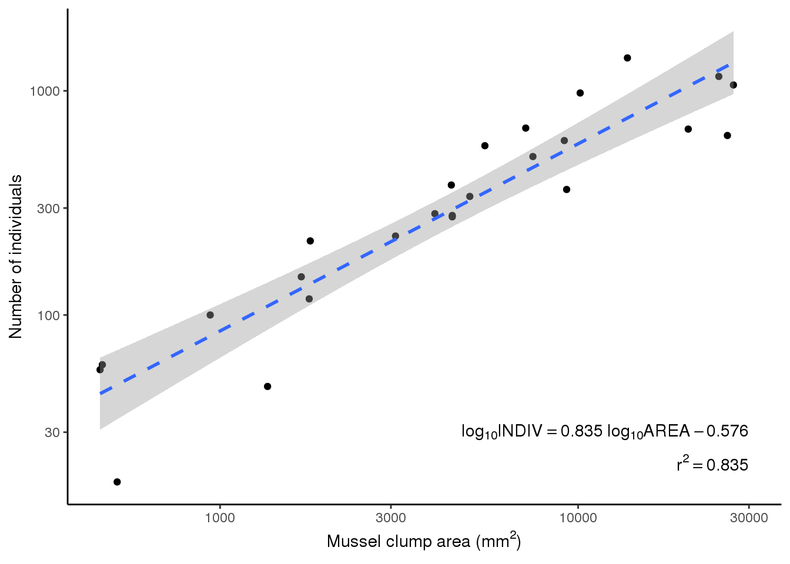
7.1.1.4.7 Step 7
Use the fitted linear model to predict the number of individuals that would be supported on two new mussel clumps with areas of 8000 and 10000 mm\(^2\).
10^predict(peake.lm, data.frame(AREA = c(8000, 10000)))
## 1 2
## 481.6561 580.2949Since OLS was used to generate the predictive model, and yet there was likely to have been uncertainty in the original mussel clump area measurements, confidence intervals about these predictions are not valid. Nevertheless, the following illustrates how they would be obtained.
10^predict(peake.lm, data.frame(AREA = c(8000, 10000)), interval = "prediction")
## fit lwr upr
## 1 481.6561 194.5975 1192.167
## 2 580.2949 233.5345 1441.938Similarly, confidence bands could be incorporated onto the plot to indicate confidence in the population regression line if there was no uncertainty in the predictor variable.
7.1.2 Polynomische Regressionen
library(tidyverse)
library(ggfortify) # um autoplot() für lm/aov nutzen zu könnenAus Logan (2010 S. 244): Script an Tools/Packages des Moduls Research Methods angepasst
Sokal and Rohlf (1997) present an unpublished data set (R. K. Koehn) in which the nature of the relationship between Lap94 allele frequency in Mytilus edulis and distance (in miles) from Southport was investigated (Box 16.5, Sokal and Rohlf (1997)).
7.1.2.1 Step 1
Import the mytilus data set myytilus.csv
mytilus <- read_csv("14_Statistik2/data/mytilus.csv")As a matter of course, Sokal and Rohlf (1997) transform frequencies using angular transformations (arcsin transformations) and henceforth \(Lap^{94}\) will be transformed in-line using \(asin(\sqrt{LAP})*\frac{180}{\pi}\).
7.1.2.2 Step 2
Confirm that simple linear regression does not adequately describe the relationship between \(Lap^{94}\) allele frequency and distance by examining a scatterplot and residual plot.
ggplot(mytilus, aes(DIST,asin(sqrt(LAP))*180/pi))+
geom_point() +
geom_smooth(se = F, colour = "black") +
geom_smooth(method = "lm", se = F, lty = 2, colour = "black")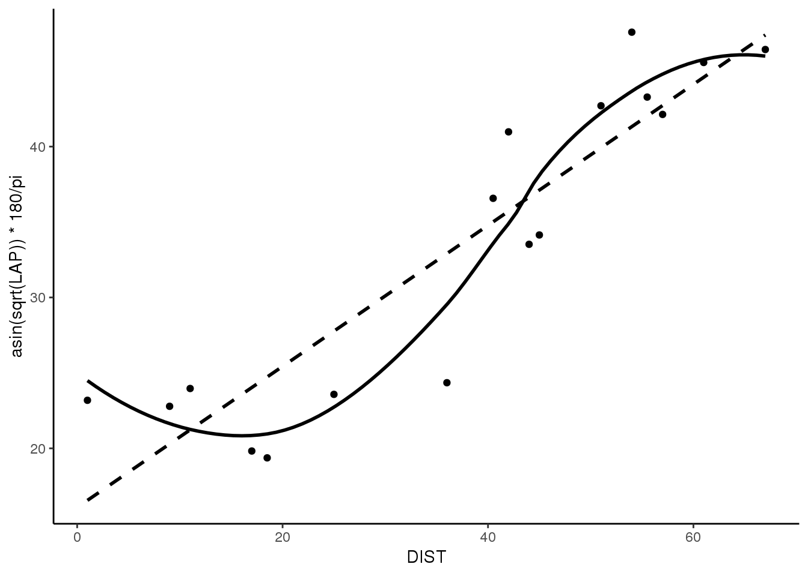
autoplot(lm(asin(sqrt(LAP))*180/pi~DIST, data=mytilus),which = 1)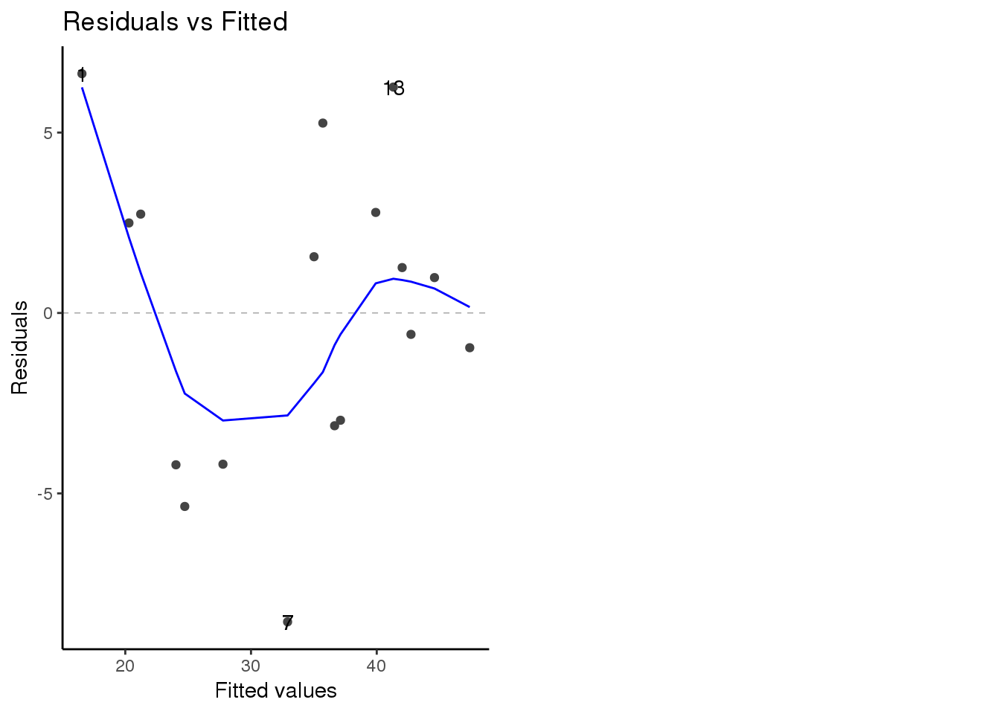
Conclusions - the scatterplot smoother suggests a potentially non-linear relationship and a persisting pattern in the residuals further suggests that the linear model is inadequate for explaining the response variable.
7.1.2.3 Step 3
Fit a polynomial regression (additive multiple regression) model incorporating up to the fifth power (5\(^{th}\) order polynomial).
Note that trends beyond a third order polynomial are unlikely to have much biological basis and are likely to be over-fit.
7.1.2.3.1 Fit the quintic model
mytilus.lm5 <- lm(asin(sqrt(LAP)) * 180/pi ~ DIST + I(DIST^2)+I(DIST^3)+I(DIST^4)+I(DIST^5), mytilus)7.1.2.3.2 Examine the diagnostics
plot(mytilus.lm5, which = 1)
autoplot(mytilus.lm5, label.size = 3)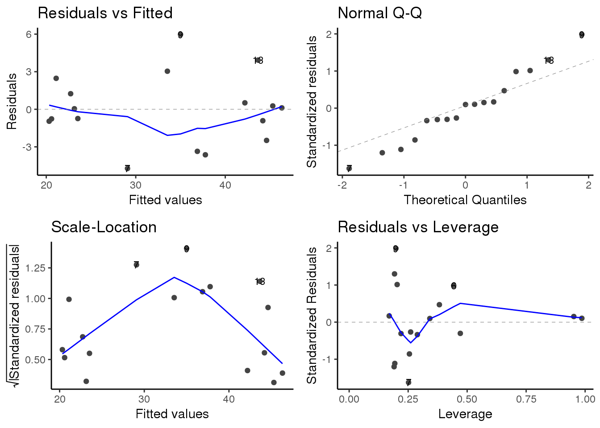
7.1.2.3.3 Examine the fit of the model including the contribution of different powers
anova(mytilus.lm5)
## Analysis of Variance Table
##
## Response: asin(sqrt(LAP)) * 180/pi
## Df Sum Sq Mean Sq F value Pr(>F)
## DIST 1 1418.37 1418.37 125.5532 2.346e-07 ***
## I(DIST^2) 1 57.28 57.28 5.0701 0.04575 *
## I(DIST^3) 1 85.11 85.11 7.5336 0.01907 *
## I(DIST^4) 1 11.85 11.85 1.0493 0.32767
## I(DIST^5) 1 15.99 15.99 1.4158 0.25915
## Residuals 11 124.27 11.30
## ---
## Signif. codes: 0 '***' 0.001 '**' 0.01 '*' 0.05 '.' 0.1 ' ' 1Conclusions: powers of distance beyond a cubic (3) do notmake significant contributions to explaining the variation in arcsin transformed \(Lat^{94}\) allele frequency.
7.1.2.3.4 The improved fit (and significance) attributed to an additional power can be evaluated by comparing the fit of the higher order models against models one lower in order.
mytilus.lm1 <- lm(asin(sqrt(LAP)) * 180/pi ~ DIST, mytilus)
mytilus.lm2 <- lm(asin(sqrt(LAP)) * 180/pi ~ DIST + I(DIST^2),mytilus)
anova(mytilus.lm2, mytilus.lm1)
## Analysis of Variance Table
##
## Model 1: asin(sqrt(LAP)) * 180/pi ~ DIST + I(DIST^2)
## Model 2: asin(sqrt(LAP)) * 180/pi ~ DIST
## Res.Df RSS Df Sum of Sq F Pr(>F)
## 1 14 237.22
## 2 15 294.50 -1 -57.277 3.3803 0.08729 .
## ---
## Signif. codes: 0 '***' 0.001 '**' 0.01 '*' 0.05 '.' 0.1 ' ' 1
mytilus.lm3 <- lm(asin(sqrt(LAP)) * 180/pi ~ DIST + I(DIST^2)+I(DIST^3), mytilus)
anova(mytilus.lm3, mytilus.lm2)
## Analysis of Variance Table
##
## Model 1: asin(sqrt(LAP)) * 180/pi ~ DIST + I(DIST^2) + I(DIST^3)
## Model 2: asin(sqrt(LAP)) * 180/pi ~ DIST + I(DIST^2)
## Res.Df RSS Df Sum of Sq F Pr(>F)
## 1 13 152.12
## 2 14 237.22 -1 -85.108 7.2734 0.0183 *
## ---
## Signif. codes: 0 '***' 0.001 '**' 0.01 '*' 0.05 '.' 0.1 ' ' 1Conclusions - a cubic model fits the data significantly better than a quadratic model (P = 0.018), the latter of which does not fit significantly better than a linear model (P = 0.09).
Due to the extreme multicollinearity problems (dist must be correlated to dist2 and dist3 etc), the parameter estimates are not stable, the standard errors are inflated and the individual parameter hypothesis tests are non informative. As with multiplicative multiple regression, this problem can be greatly alleviated by first centering the predictor variable. However, the value in doing so is limited as the resulting parameters (and associated confidence intervals) would then have to be back transformed into the original scales in order to construct a descriptive or predictive model (main uses of polynomial regression). Since the values of the estimated polynomial parameters do not have any biological meaning, standard errors and hypothesis tests of the parameter estimates should be ignored.
7.1.2.3.5 Estimate the model parametersm for the cubic model so as to establish the descriptive or predictive model.
summary(mytilus.lm3)
##
## Call:
## lm(formula = asin(sqrt(LAP)) * 180/pi ~ DIST + I(DIST^2) + I(DIST^3),
## data = mytilus)
##
## Residuals:
## Min 1Q Median 3Q Max
## -6.1661 -2.1360 -0.3908 1.9016 6.0079
##
## Coefficients:
## Estimate Std. Error t value Pr(>|t|)
## (Intercept) 26.2232524 3.4126910 7.684 3.47e-06 ***
## DIST -0.9440845 0.4220118 -2.237 0.04343 *
## I(DIST^2) 0.0421452 0.0138001 3.054 0.00923 **
## I(DIST^3) -0.0003502 0.0001299 -2.697 0.01830 *
## ---
## Signif. codes: 0 '***' 0.001 '**' 0.01 '*' 0.05 '.' 0.1 ' ' 1
##
## Residual standard error: 3.421 on 13 degrees of freedom
## Multiple R-squared: 0.9112, Adjusted R-squared: 0.8907
## F-statistic: 44.46 on 3 and 13 DF, p-value: 4.268e-07Conclusions - there was a significant cubic relationship between the frequency of the \(Lat^{94}\) allele in Mytilus edulis and distance from Southport (P < 0.001, \(r^2 = 0.911\): \(arcsin\sqrt{Lat} = 26.2233 - 0.9441dist + 0.0421dist^2 - 0.0003dist^3\)).
7.1.2.4 Step 4
Construct a summary figure to summarize the illustrate the proposed nature of the relationship.
ggplot(mytilus, aes(DIST,asin(sqrt(LAP))*180/pi))+
geom_point() +
geom_smooth(se = F, colour = "black") +
labs(y = expression(paste("Arcsin ",sqrt(paste("freq. of allele ", italic("Lap"))^{94}))), x = expression(paste("Miles east of Southport,Connecticut")))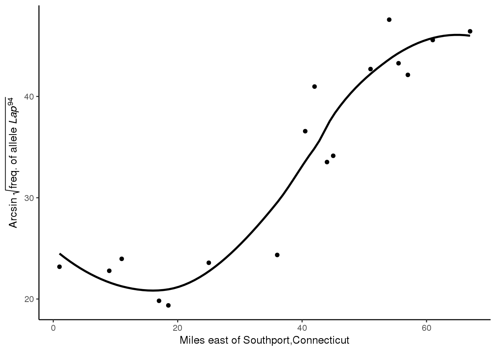
7.1.3 Einfaktorielle ANOVA (einfache)
7.1.4 Mehrfaktorielle ANOVA
Aus Crawley (2015, 168): Script an Tools/Packages des Moduls Research Methods angepasst
Import dataset growth.csv
weight <- read_csv("14_Statistik2/data/growth.csv")
weight_smry <- weight %>%
group_by(diet, supplement) %>%
summarise(
mean = mean(gain)
)
ggplot(weight_smry, aes(diet, mean, fill = diet)) +
geom_bar(stat = "identity") +
facet_grid(.~supplement) +
scale_fill_grey(guide = F) 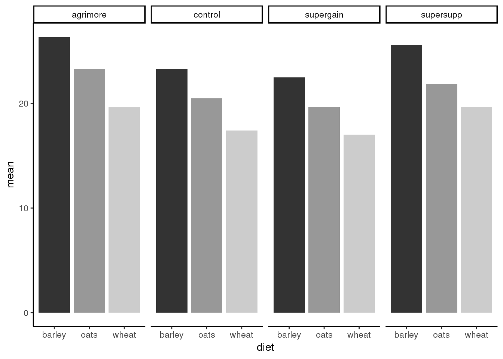
model <- aov(gain~diet*supplement,weight)
summary(model)
## Df Sum Sq Mean Sq F value Pr(>F)
## diet 2 287.17 143.59 83.52 3.00e-14 ***
## supplement 3 91.88 30.63 17.82 2.95e-07 ***
## diet:supplement 6 3.41 0.57 0.33 0.917
## Residuals 36 61.89 1.72
## ---
## Signif. codes: 0 '***' 0.001 '**' 0.01 '*' 0.05 '.' 0.1 ' ' 1
weight %>%
group_by(diet, supplement) %>%
summarise(
n = n()
) %>%
spread(supplement, n)
## # A tibble: 3 x 5
## # Groups: diet [3]
## diet agrimore control supergain supersupp
## <chr> <int> <int> <int> <int>
## 1 barley 4 4 4 4
## 2 oats 4 4 4 4
## 3 wheat 4 4 4 4
weight_smry <- weight %>%
group_by(diet, supplement) %>%
summarise(
n = n(),
mean = mean(gain),
se = sqrt(1.72/n)
)
ggplot(weight_smry, aes(diet, mean, fill = diet)) +
geom_bar(stat = "identity") +
facet_grid(.~supplement) +
scale_fill_grey(guide = F) +
geom_errorbar(aes(ymin = mean-se, ymax = mean+se),width = 0.2) 
summary.lm(model)
##
## Call:
## aov(formula = gain ~ diet * supplement, data = weight)
##
## Residuals:
## Min 1Q Median 3Q Max
## -2.48756 -1.00368 -0.07452 1.03496 2.68069
##
## Coefficients:
## Estimate Std. Error t value Pr(>|t|)
## (Intercept) 26.3485 0.6556 40.191 < 2e-16 ***
## dietoats -3.0501 0.9271 -3.290 0.002248 **
## dietwheat -6.7094 0.9271 -7.237 1.61e-08 ***
## supplementcontrol -3.0518 0.9271 -3.292 0.002237 **
## supplementsupergain -3.8824 0.9271 -4.187 0.000174 ***
## supplementsupersupp -0.7732 0.9271 -0.834 0.409816
## dietoats:supplementcontrol 0.2471 1.3112 0.188 0.851571
## dietwheat:supplementcontrol 0.8183 1.3112 0.624 0.536512
## dietoats:supplementsupergain 0.2470 1.3112 0.188 0.851652
## dietwheat:supplementsupergain 1.2557 1.3112 0.958 0.344601
## dietoats:supplementsupersupp -0.6650 1.3112 -0.507 0.615135
## dietwheat:supplementsupersupp 0.8024 1.3112 0.612 0.544381
## ---
## Signif. codes: 0 '***' 0.001 '**' 0.01 '*' 0.05 '.' 0.1 ' ' 1
##
## Residual standard error: 1.311 on 36 degrees of freedom
## Multiple R-squared: 0.8607, Adjusted R-squared: 0.8182
## F-statistic: 20.22 on 11 and 36 DF, p-value: 3.295e-12model <- lm(gain~diet+supplement,weight)
summary(model )
##
## Call:
## lm(formula = gain ~ diet + supplement, data = weight)
##
## Residuals:
## Min 1Q Median 3Q Max
## -2.30792 -0.85929 -0.07713 0.92052 2.90615
##
## Coefficients:
## Estimate Std. Error t value Pr(>|t|)
## (Intercept) 26.1230 0.4408 59.258 < 2e-16 ***
## dietoats -3.0928 0.4408 -7.016 1.38e-08 ***
## dietwheat -5.9903 0.4408 -13.589 < 2e-16 ***
## supplementcontrol -2.6967 0.5090 -5.298 4.03e-06 ***
## supplementsupergain -3.3815 0.5090 -6.643 4.72e-08 ***
## supplementsupersupp -0.7274 0.5090 -1.429 0.16
## ---
## Signif. codes: 0 '***' 0.001 '**' 0.01 '*' 0.05 '.' 0.1 ' ' 1
##
## Residual standard error: 1.247 on 42 degrees of freedom
## Multiple R-squared: 0.8531, Adjusted R-squared: 0.8356
## F-statistic: 48.76 on 5 and 42 DF, p-value: < 2.2e-16supp2 <- factor(weight$supplement)
weight <- weight %>%
mutate(
supplement2 = ifelse(supplement %in% c("agrimore","supersupp"),"best","worst")
)model2 <- lm(gain~diet+supplement2,weight)
anova(model ,model2)
## Analysis of Variance Table
##
## Model 1: gain ~ diet + supplement
## Model 2: gain ~ diet + supplement2
## Res.Df RSS Df Sum of Sq F Pr(>F)
## 1 42 65.296
## 2 44 71.284 -2 -5.9876 1.9257 0.1584summary(model2)
##
## Call:
## lm(formula = gain ~ diet + supplement2, data = weight)
##
## Residuals:
## Min 1Q Median 3Q Max
## -2.6716 -0.9432 -0.1918 0.9293 3.2698
##
## Coefficients:
## Estimate Std. Error t value Pr(>|t|)
## (Intercept) 25.7593 0.3674 70.106 < 2e-16 ***
## dietoats -3.0928 0.4500 -6.873 1.76e-08 ***
## dietwheat -5.9903 0.4500 -13.311 < 2e-16 ***
## supplement2worst -2.6754 0.3674 -7.281 4.43e-09 ***
## ---
## Signif. codes: 0 '***' 0.001 '**' 0.01 '*' 0.05 '.' 0.1 ' ' 1
##
## Residual standard error: 1.273 on 44 degrees of freedom
## Multiple R-squared: 0.8396, Adjusted R-squared: 0.8286
## F-statistic: 76.76 on 3 and 44 DF, p-value: < 2.2e-167.1.5 ANCOVA
library(tidyverse)
library(ggfortify) # um autoplot() für lm/aov nutzen zu könnenAus Logan (2010 S. 457): Script an Tools/Packages des Moduls Research Methods angepasst
To investigate the impacts of sexual activity on male fruitfly longevity, Partridge and Farquhar (1981), measured the longevity of male fruitflies with access to either one virgin female (potential mate), eight virgin females, one pregnant female (not a potential mate), eight pregnant females or no females. The available male fruitflies varied in size and since size is known to impact longevity, the researchers randomly allocated each individual fruitfly to one of the five treatments and also measured thorax length as a covariate (from Box 12.1 of Quinn and Keough (2002)).
7.1.5.1 Step 1
Import the Partridge and Farquhar (1981) data set partridge
partridge <- read_csv("14_Statistik2/data/partridge.csv")7.1.5.2 Step 2
Assess assumptions of normality and homogeneity of variance for each null hypothesis ensuring that the correct scale of replicates are represented for each (they should reflect the appropriate F-ratio denominators see).
Conclusions - A distinct wedge shape is apparent in the residuals from the model fitted with the raw longevity measurements suggesting homogeneity of variance issues. This issue is less obvious in the residual plot based upon \(log_{10}\) transformed data, and thus analyses should be based on the transformed data.
7.1.5.3 Step 3
Assess assumptions of linearity, homogeneity of slopes and covariate range equality (using log transformed data).
partrigdge.aov <- aov(LONGEV ~ THORAX+TREATMENT, partridge)
autoplot(partrigdge.aov)
Figure 7.8: Conclusions - The slopes of each of the relationships between the response (longevity) and the covariate (thorax length) appear similar and there is no evidence of non-linearity.
partrigdge.aov.log10 <- aov(log10(LONGEV) ~ THORAX+TREATMENT, partridge)
autoplot(partrigdge.aov.log10)Figure 7.8: Conclusions - The slopes of each of the relationships between the response (longevity) and the covariate (thorax length) appear similar and there is no evidence of non-linearity.
ggplot(partridge, aes(THORAX,LONGEV)) +
geom_point() +
scale_y_log10() +
facet_wrap(~TREATMENT) +
geom_smooth(method = "lm", se = F)
Figure 7.8: Conclusions - The slopes of each of the relationships between the response (longevity) and the covariate (thorax length) appear similar and there is no evidence of non-linearity.
anova(aov(log10(LONGEV) ~ THORAX * TREATMENT, partridge))
## Analysis of Variance Table
##
## Response: log10(LONGEV)
## Df Sum Sq Mean Sq F value Pr(>F)
## THORAX 1 1.21194 1.21194 176.4955 <2e-16 ***
## TREATMENT 4 0.78272 0.19568 28.4970 <2e-16 ***
## THORAX:TREATMENT 4 0.04288 0.01072 1.5611 0.1894
## Residuals 115 0.78967 0.00687
## ---
## Signif. codes: 0 '***' 0.001 '**' 0.01 '*' 0.05 '.' 0.1 ' ' 1Conclusions - There is noevidence that the slopes arenot parallel (\(F_{4.115} = 1.56, P = 0.182\)).
ggplot(partridge, aes(THORAX,log10(LONGEV), colour = TREATMENT)) +
geom_point(aes(pch = TREATMENT)) +
geom_smooth(method = "lm", se = F, aes(lty = TREATMENT)) +
labs(y = expression(paste(log[10]*LONGEV)))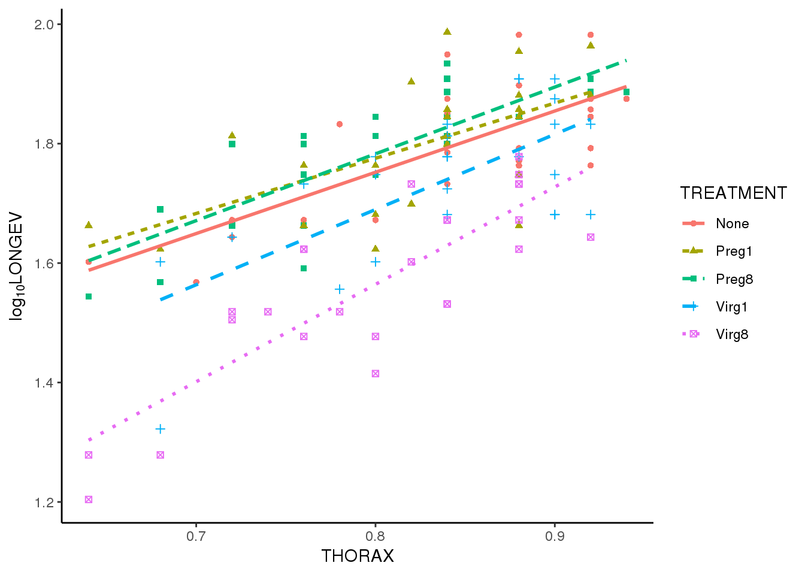
anova(aov(THORAX ~ TREATMENT, partridge))
## Analysis of Variance Table
##
## Response: THORAX
## Df Sum Sq Mean Sq F value Pr(>F)
## TREATMENT 4 0.03000 0.0074992 1.2606 0.2893
## Residuals 120 0.71389 0.0059491Conclusions - There is no evidence that the treatments affect male fruitfly longevity and thus that the covariate ranges are not substantially different (\(F_{4,120} = 1.26\), \(P = 0.289\)).
7.1.5.4 Step 4
Fit the linear model and produce an ANOVA table to test the null hypotheses That there are no effects of treatment (female type) on the (log transformed) longevity of male fruitflies adjusted for thorax length. Note that as the design is inherently imbalanced (since there is a different series of thorax lengths within each treatment type), Type I sums of squares are inappropriate. To be consistent with Quinn and Keough (2002) Box 12.1, Type III sums of squares will be used. In addition to the global ANCOVA, the researchers are likely to have been interested in examining a set of specific planned comparisons. Two such contrasts could be pregnant versus virgin partners (to investigate the impacts of any sexual activity) and one virgin versus eight virgin partners (to investigate the impacts of sexual frequency).
partridge$TREATMENT <- as.factor(partridge$TREATMENT)
contrasts(partridge$TREATMENT) <- cbind(c(0, 0.5, 0.5, -0.5,-0.5), c(0, 0, 0, 1, -1))
round(crossprod(contrasts(partridge$TREATMENT)), 1)
## [,1] [,2] [,3] [,4]
## [1,] 1 0 0 0
## [2,] 0 2 0 0
## [3,] 0 0 1 0
## [4,] 0 0 0 1
partridge.aov <- aov(log10(LONGEV) ~ THORAX +TREATMENT,partridge)Das Package “biology” wird von M. Logan leider nicht mehr weitergeführt, die lezte Version wurd für R2.15.2 entwickelt und lässt sich auf R3.4.1 nicht mehr installieren. Hier der Output gemäss Logan (2010 S. 460)
library(biology)
AnovaM(partridge.aov, type = "III", split = list(TREATMENT = list('PregvsVirg'=1,'1Virgvs8Virg'=2)))Df Sum Sq Mean Sq
THORAX 1 1.01749 1.01749
TREATMENT 4 0.78272 0.19568
TREATMENT: Preg vs Virg 1 0.54203 0.54203
TREATMENT: 1 Virg vs 8 Virg 1 0.19934 0.19934
Residuals 119 0.83255 0.00700
F value Pr(>F)
THORAX 145.435 < 2.2e-16
TREATMENT 27.970 2.231e-16
TREATMENT: Preg vs Virg 77.474 1.269e-14
TREATMENT: 1 Virg vs 8 Virg 28.492 4.567e-07
Residuals
THORAX ***
TREATMENT ***
TREATMENT: Preg vs Virg ***
TREATMENT: 1 Virg vs 8 Virg ***
Residuals
---
Signif. codes: 0 '***' 0.001 '**' 0.01 '*' 0.05 '.' 0.1 ' ' 1Conclusions - The quantity (\(F_{1,119} = 77.47\), \(P < 0.001\)) and reproductive state ($F_{1,119} = 28.49, \(P < 0.001\)) of female partners that a male fruitfly has access to has a significant affect on male longevity.
7.1.5.5 Step 5
Summarize the trends in a plot. Note this is not the same as the plot produced by Quinn and Keough (2002). Whilst Quinn and Keough (2002) logged \(log_{10}\) transformed data on the y-axis, I have elected to plot the raw data on a log-scale y-axis.
ggplot(partridge, aes(THORAX,LONGEV, colour = TREATMENT)) +
geom_point(aes(pch = TREATMENT)) +
scale_y_log10(breaks = seq(0,100,20)) +
geom_smooth(method = "lm", se = F, aes(lty = TREATMENT)) +
labs(y = expression(paste(log[10]*LONGEV))) 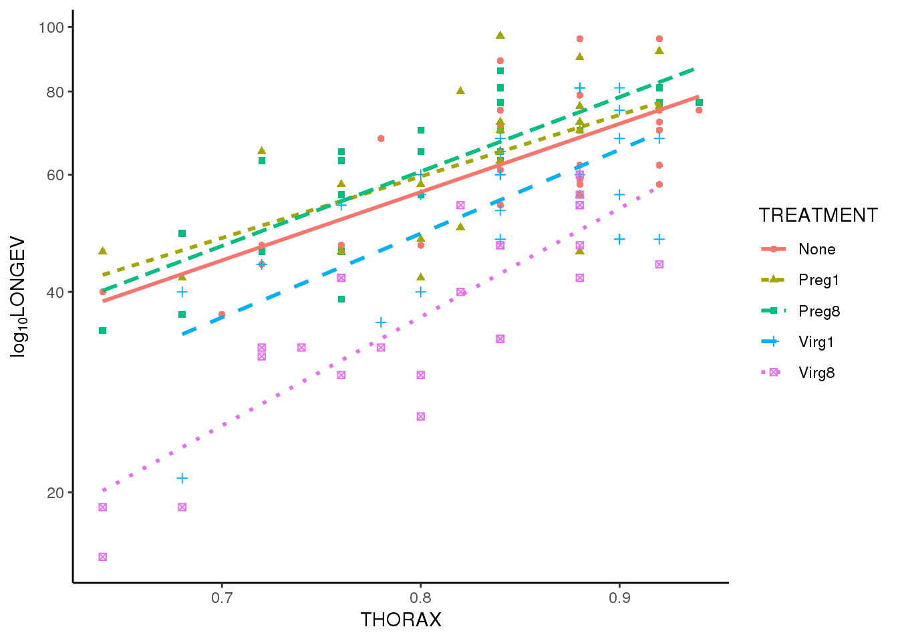
Statistik 8 (20.11.2018)
Logan, Murray. 2010. Biostatistical Design and Analysis Using R : A Practical Guide. Wiley-Blackwell. http://onlinelibrary.wiley.com/book/10.1002/9781444319620.
Crawley, Michael J. 2015. Statistics: An Introduction Using R. Wiley. http://onlinelibrary.wiley.com/book/10.1002/9781119941750.